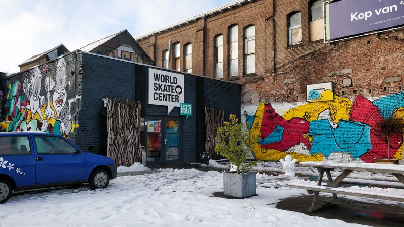
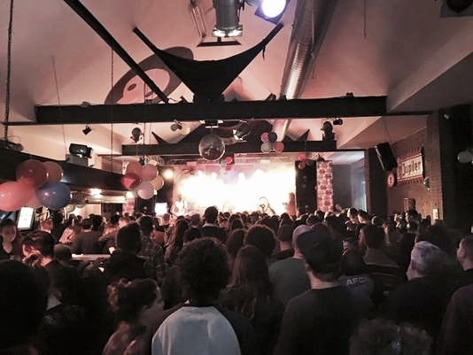

Benjamin Fro
Een filosofische rapper uit Amsterdam gewapend met maatschappelijke kritische teksten
- Dag
- zaterdag
- Begin
- 16:45
- Einde
- 17:45
- Soort
- Show
- Locatie
- Skatehal
- Plek
- Cafépodium
Benjamin Fro
Muzikale invloeden van Kendrick Lamar, Chance the Rapper en Noname maar zijn boodschap komt overeen met die van Bob Marlet, Logic en Laurynn Hill.
Benjamin Fro is een singer-songrapper die op dansbare beats tekeergaat met geëngageerde teksten. Zijn muziek brengt verschillende genres samen en is altijd groovy en dansbaar. Na een aantal nummers en albums heeft hij in 2019 een project over de millennial naar buiten gebracht: Hoe die in de grote stad worstelt met een identiteitscrisis, hoge huurprijzen, liefde en de prestatiemaatschappij. Samen met zijn liveband weet hij elke zaal wakker te schudden, zo ook de Skatehal!


 Skatehal
Skatehal

Cafépodium Vert Skate eiland
In deze monumentale fabriek werden vroeger scheepsschroeven gegoten van ijzer uit een hete smeltkroes. Tegenwoordig is deze plek een ware smeltkroes van urban arts en sports.
“Voor zij die daar warm van worden, creëren we een smeltkroes van Skaten, boarden, BMX, graffiti, hiphop, punk, garagerock, klimmen en freerunnen. Om af te koelen kun je er ook terecht voor de coolste indie bands”
Cafépodium
Op het podium van het café van het World Skate Center spugen de meest aanstormende rappers uit Nederland hun teksten in verschillende cyphers.
Waar dan?